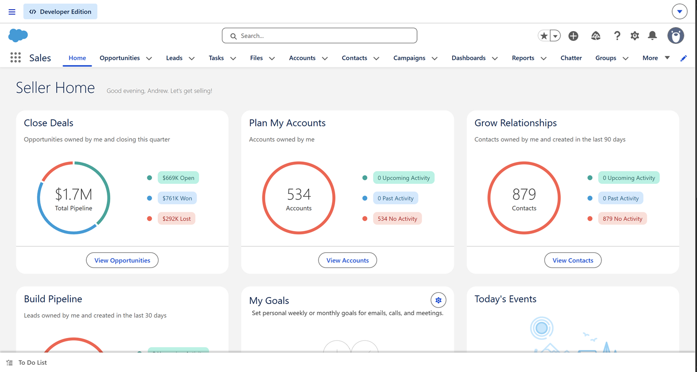
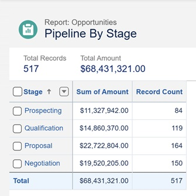
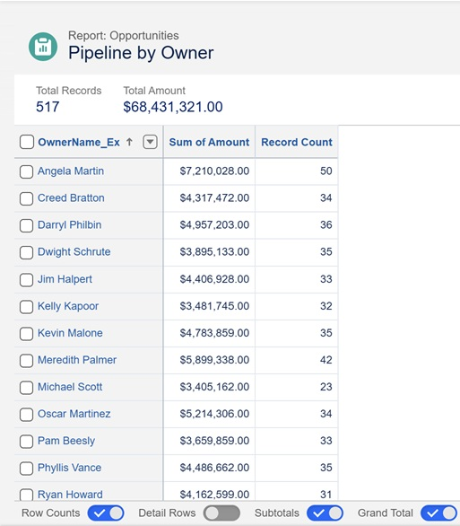
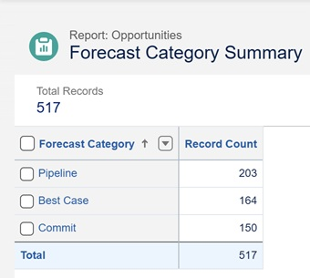
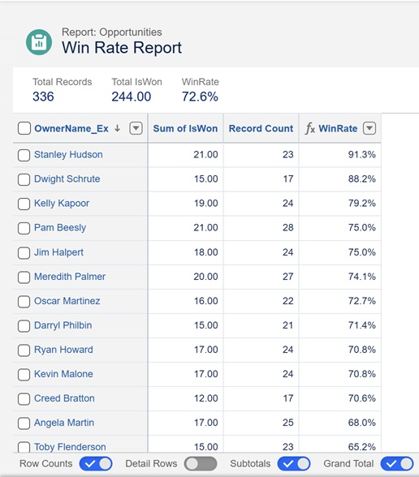
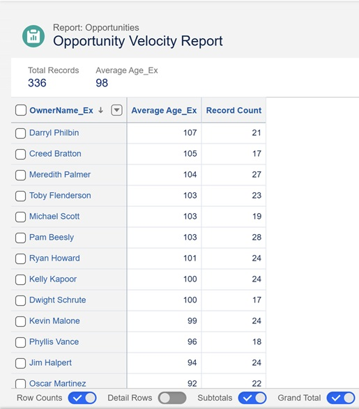
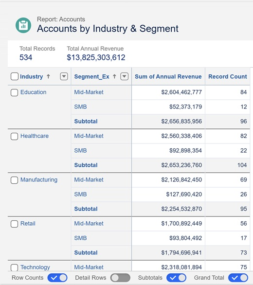
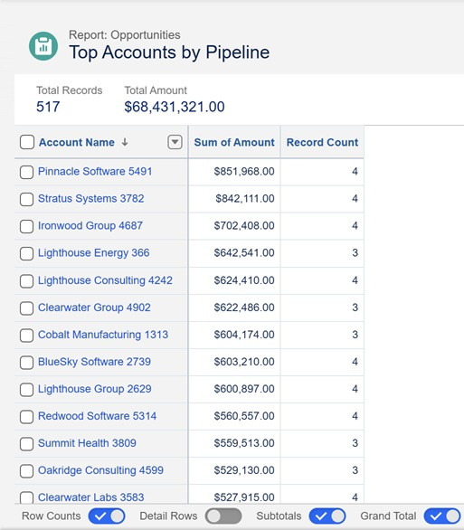

Salesforce Revenue Operations: From Data Source to Dashboard

1. Project Summary
This project uses synthetic CRM data that is loaded into Salesforce and then ingested into a Snowflake database using Salesforce's API and a standard extract‑load‑transform (ELT) process. This data will then be visualized in a series of dashboards on this website. The goal is to both demonstrate an end-to-end workflow and to teach the core concepts of revenue operations. This process allows a company to use external BI tools and web-based dashboards to analyze Salesforce data. It allows for data cleaning, modeling, and more sophisticated analytics than what is possible with Salesforce reporting tools. This project also includes standard Salesforce reports, a dashboard and a CRMA dashboard as a comparison and to show familiarity with Salesforce’s user interface. For this project I found a complete CRM dataset on the website Kaggle that mimics a company with a large sales team. While this project is still in progress, see below for the work that has been completed.
2. Salesforce Reports and Dashboards
A. Data Import
Since the free-tier of Salesforce Developer Edition provides limited memory, I first had to create a smaller sample of the data I could upload to my Salesforce environment ("org"). The rest of the data is uploaded directly to Snowflake. All Salesforce orgs use the same data model that includes what Salesforce calls standard objects. Standard objects are tables in the data model with names like Accounts, Opportunities, Leads and others. I filtered the Accounts table and all related tables to only business accounts that are located in Pennsylvania. Since the leads in this dataset do not come with a location I picked a random sample based on the size of the sample opportunities table. Another limitation is that I was not able to upload the tasks, user or event table to Salesforce. The users table is based on actual Salesforce licenses and so it is not possible to import fake users. To simulate different users for reports I added a custom field to the opportunities standard object. The tasks and events table require an owner from the users table. This means all the tasks and events would only be associated with my user account. This means it was not productive to import these tables for this project. This data can only be analyzed using the external BI tools. The rest of the sample data I imported into Salesforce using the Java extension data loader. I mapped all the synthetic Salesforce id’s to a custom field in each table. This gives me a way to map the external datasets to the data that is already uploaded into Salesforce. Salesforce generated unique ids for each of the imported tables. This was neccessary for the times I needed to change a column value or upload data a second time with the actual Salesforce id included. I used this sample data to generate many of the standard reports used for revenue operations, shown below.
B. Reports
i. Pipeline by Stage
Shows the dollar value and the number of open opportunities by each stage of the sales process (prospecting, qualification, proposal, negotiation). Currently the stage with the greatest number of opportunities and potential revenue is the proposal stage.

ii. Pipeline by Owner (Sales Rep)
Shows the dollar value and the number of open opportunities owned by each sales representative. Angela Martin has the largest number of deals and potential revenue in her pipeline.

iii. Forecast Category Summary
Shows the total number of open opportunities broken out by forecast category (pipeline, best case, commit). Pipeline includes all opportunities that are not categorized as best case or commit. Best case includes opportunities in the perception and proposal stages. Commit includes only the negotiation stage. The mapping between stage and forecast category can vary based on business needs. Best case opportunities are believed to close if things go well but are just as likely not to close. Deals in the commit category are believed to be likely to close.

iv. Win Rate Report
Provides the win rate (closed won versus closed lost) for each sales representative. There happened to be a high proportion of closed won to closed lost opportunities in the sample data. Stanley Hudson seems to be the most effective sales representative, based on his win rate.

v. Opportunity Velocity
Measures the average number of days between opportunity creation date and opportunity close date. I needed to create a custom variable for opportunity creation date. Salesforce sets creation date to the day the opportunity is created or when the opportunity is imported into Salesforce. I had to create a new a variable to store the creation date recorded in the sample data and add the row level formula Average Age_Ex. Darryl Philbin has the longest sales cycle.

vi. Accounts by Industry and Segment
Summarizes the number of accounts by industry and segment. It includes the sum of annual revenue and the number of accounts. Annual revenue represents the revenue the accounts provided in past years. It is not tied to revenue totals from opportunities or current pipeline figures.

vii. Top Accounts by Open Pipeline
Shows the number of open opportunities and total dollar amount by account. Sorted from largest open pipeline to the smallest. Shows which accounts currently have the ability to provide the most revenue and probably deserve the most attention.

C. Dashboard
Using the above reports, I created the following dashboard to provide quick insights. In Salesforce, each dashboard chart or table is created from an existing report. The dashboard covers the key areas: pipeline health, rep performance, funnel efficiency and deal velocity. It follows best practices for dashboard design by providing a high level view of the pipeline at the top left and focusing on details as the eyes move to the bottom right.